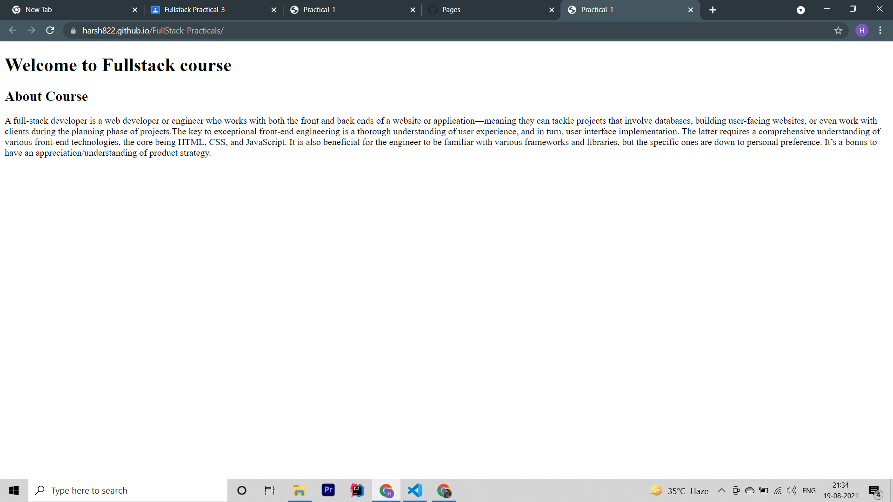

A full-stack developer is a web developer or engineer who works with both the front and back ends of a website or application—meaning they can tackle projects that involve databases, building user-facing websites, or even work with clients during the planning phase of projects.The key to exceptional front-end engineering is a thorough understanding of user experience, and in turn, user interface implementation. The latter requires a comprehensive understanding of various front-end technologies, the core being HTML, CSS, and JavaScript. It is also beneficial for the engineer to be familiar with various frameworks and libraries, but the specific ones are down to personal preference. It’s a bonus to have an appreciation/understanding of product strategy.
Live Page On Github
